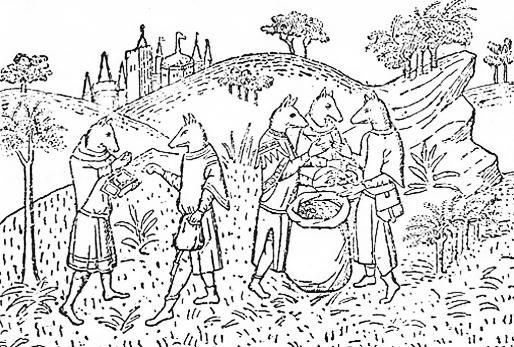

Oğuz-Han'ın İt-Barak ülkesine karşı başlıca üç akını vardır. Oğuz-Han, birinci akınında mağlup olmuş ve bir adaya çekilmek zorunda kalmıştır. Bu ada, iki ırmak arasında idi. Türk mitolojisinde, iki ırmak arasında veya ırmakların kavşağındaki tek adalar kutsal idiler. Nitekim Uygurların menşe efsanesinde de, Uygurların ataları, Tula ve Selenga nehirlerinin birleştikleri yerde bulunan bir adadaki kayın ağacından doğmuşlardı. Bu adada da Kıpçak, anası tarafından bir ağaç kovuğu içinde doğmuştur. Babasının harpde ölmesi sebebiyle de Oğuz-Han, onu evlâtlık olarak almıştı. Eski Türk hukukunda "tutunç oğul" denen bu oğulluk müessesesi çok önemlidir. Çingiz Han zamanında da, hassa ordusunun en önemli komutanları, Çingiz Han'ın evlâtlıkları idiler. İt-Barak akını sırasında doğan Kıpçak, sonradan "Karanlık ülkeleri" ve İt-Barak'ları idare etmek için, yine Oğuz-Han tarafından kuzeye gönderilmişti. Az sonra bu konu üzerinde yine duracağız.
Farsça Oğuz-nâme'de, İt-Barak kadınlarının çok güzel olduklarından ve Oğuz- Han'ın askerleri ile beraber gittiklerinden ve hatta kendi erkeklerinin mağlup edilmesi için, Oğuz-Han ordusuna yardım ettiklerinden söz açılıyor. Bu sebeple, Kıpçak'ın annesinin de bir İt-Barak'lı kadın olmasından şüphelenmiştik. Çünkü bundan sonraki kayıtlarda, daima İt-Barak'larla Kıpçak'ın akrabalığından söz edilmektedir.
Oğuz-Han'ın İt-Barak'lara karşı yaptığı ikinci akını yine efsaneye göre, 17 yıl devam etmiştir. Oğuz-Han, bu ikinci akında İt-Barak'ları büyük bir bozguna uğratmış ve kendine tâbi kılmıştı.336
Oğuz-Han, bundan sonra İran ülkesine gitmiş ve orasını zapt etmiştir. İran'dan dönünce, İt-Barak'lar isyan etmiş ve bundan sonra üçüncü akını yapmıştır.337 Bu üçüncü akında, onlara tam olarak baş eğdirmiş ve hatta İslamiyet’ten sonra yazılan Oğuz-nâme'lerde Oğuz-Han, İt-Barakları Hak dinine sokmuş ve Müslüman yapmıştı. Oğuz-Han bu son akınından sonra Kıpçak ve Kıpçak’tan türeyen soyları, Nayman'larla, İt-barak'lar arasına yerleştirmiş ve onları bu bölgelerin idaresine memur etmişti.338
Elimizdeki bilgilere göre Nayman'ların yurtları, batıda Kök-Erdiş (İrtiş) nehrine kadar uzanıyor ve bazen de bu nehrin batısına geçiyordu. Bundan sonra güney-doğuda, Kanglı'ların sınırları başlıyordu. Hatta Kanglı'ların doğuda bazan Kara-Korum'a kadar uzadıkları bile söylenir.339 Bir gerçek varsa, o da Naymanların İrtiş nehrinin batısına geçmedikleridir. Bu duruma göre Kıpçakların sınırları doğuda İrtiş nehrinden başlıyor ve İdil nehrine kadar uzanıyordu. Farsça destanın İt-Barak yerine Kıl-Barak dediği bu kavim, İdil nehrinin ötesinde ve "Karanlık ülkelerde" idiler.340 İdil nehrinin ne kadar ötesinde veya kuzeybatısında olduklarını elbette efsanelere göre kestirmenin bir imkânı yoktur. Ebülgazi ise Oğuz-Han'ın Kıpçak'ı, Ten (Don) ve İdil bölgelerine gönderdiğini söylüyor.341 Tabii olarak bu yazar, kendi çağındaki coğrafya ve etnik durum bilgisine göre bir tahminde bulunuyordu.
Ebülgazi Bahadır Han, İslâm tarihlerinde yazılan Köpek-Başlı insanlarla ilgili efsaneleri okumuş ve bu yeni bilgilere göre, eski Oğuz destanlarındaki söylentileri düzeltmek istemiş ve değiştirmiştir. Ona göre İt-Barak'lar Hint Okyanusu kıyılarında oturuyorlardı.342 Az sonra göreceğimiz gibi İslâm kaynaklarında da, Köpek-Başlı insanların bu bölgelerde oturdukları yazılmıştır. Ayrıca Ebülgazi, Kara-Hıtay'ları da işin içine katmakta ve bunların yüzünün siyah olduğunu söylemektedir. Bu da, Kara-Hıtay'Iara karşı Türkler arasında pek fazla bir sempati doğmamış olduğunu gösterir.
Barak sözünün, Türkçe "bar-mak, var-mak" fiilinden türediği anlaşılıyor. Aslında, "varan, çok çabuk yürüyen ve koşan" anlamına geliyordu. Kuzey Sibirya'da yaşayan Yakut Türklerinin masallarında geçen ve çok süratli yürüyen mitolojik bir kişinin adı da Baragçı'dır.343 Bunun yanında, yine Yakutlarda kadın ve erkek Şamanların ataları olan ve onları türeten Kara-Burag Hatun vs. gibi ikinci derecede Tanrıları da görüyoruz.344 Diğer kaynaklar da Barak cinsi köpeklerin başlıca iki özelliğini sayıyorlar. Bunlardan birincisi, bu hayvanlar çok koşmaları ikincisi de tüylerinin çok oluşu imiş. Bu sebeple bu sözün aslını, Yakutçadaki örneklerine bakarak eski Türkçe bar-, "var-mak" fiilinden getirmek, hiç de yersiz olmayacaktır kanaatındayız.
Kaşgarlı Mahrnud, Barak sözünü şöyle aydınlatıyor : "Çok tüylü bir köpektir. Türklerin inancına göre, kerkes kuşu kocayınca iki yumurta yumurtlar ve bunların üzerine oturur imiş. Bu yumurtalardan birinden Barak adlı bir köpek çıkarmış. Barak, köpekler içinde en iyi koşan ve en iyi de av avlayan bir cins imiş. Öbür yumurtadan da başka bir yavru çıkarmış. Bu yumurta da, artık o kuşun son yavrusu olurmuş.345" Kaşgarlı Mahmud, bu ikinci yavrunun ne olduğunu söylemiyor. Bu da herhalde bir kuş idi.
Bir kaç yerde söylediğimiz gibi Kırgızların bir atasözü vardır. Konumuzu tamamlama bakımından, bu atasözünü buraya da alalım: "Kuş törüsü Buudayık, it törüsü Kumayık." Yani, "kuşların reisi Buudayık adlı büyük yırtıcı kuş, köpeklerin reisi veya en iyisi de Kumayık adlı köpektir346." Kumayık adlı bu köpek, Kırgız mitolojisinde de yeri olan, efsaneleşmiş bir köpektir. Zaten adından da anlaşılacağı gibi, Kumayık sözü, Kuma, yani "Hüma kuşu"nun adından türemiş olmalıdır. Daha doğrusu köpek, annesinin adını almıştır. Kumayık demek, "Kuma, yani Hüma'ya benzer, Hümamsı" demektir. Yine Kırgızlar, çok iyi koşan ve av yakalayan bir Türkmen tazısına da Kumai/Kumay ( = ? Hüma, Humay) adım verirler.347
Bütün bunlar bize gösteriyor ki, ufak mahiyet ve ad değişimlerine rağmen, bu inanışlar Türk halkları arasında devam edip gitmektedir. Köpek-Ata ile ilgili bölümümüzde de incelediğimiz gibi, Asya'nın en meşhur av köpekleri Tibet tazıları idiler. Bunlar da Doğu Asya mitolojisinde önemli yer tutmuşlar ve efsaneye göre Tibet halkı bunlardan türemişti. Ali Ekber'in Hıtay-nâme adlı kitabının Osmanlı mütercimleri bu köpeklere barak adını verirler (Bk. S. 560-2). Ayrıca Türk yaratılış destanları ile ilgili bölümlerimizde de kılsız köpeklerden söz açmıştık.
Diğer Oğuz destanlarında bu kavme İt-Barak adı verildiği halde, Farsça Oğuz destanında Kıl-Barak denir.348 Rahmetli Ahmet Vefik Paşa, Kıl-Barak deyimi için üç mana vermektedir: 1. Tüylü, soy bir at; 2. Bir nev'i av köpeği; 3. Tatar veya Sibir köpeği.349 Buna, Kara-Barak da der. Şüphesiz ki Paşa, bu maddeyi yazarken, Anadolu dışındaki Türk edebiyatının da tesiri altında kalmıştı. Bununla beraber, Anadolu'da çok tüylü atlara ve hatla midillilere Kıl-Barak dendiği de bir gerçek idi.350 Osmanlılarda Barak sözü, yine kıllı olmasından dolayı olacak ki, kıllı ve tüylü kumaşlara351 ve hatta tüylü ve saçaklı külâhlara bile ad olarak verilmişti.352 Bütün bunlar bize gösteriyor ki Kıl-Barak sözü, İt-Barak'ın bir sıfatla tarif edilmiş bir karşılığıdır.
Türkler Müslüman olduktan sonra, Barak sözünün yerine, Kur’an’da geçen Burak adını geçirmişlerdir.353 Onun için aynı kişiye, bazı kaynaklar Burak ve bazıları da Barak demişlerdir.
Türklerde Barak adına çok rastlanır.354 Moğollara da Türklerden geçmiş olmalıdır.355 Türkistan'da Barak-Tam adlı meşhur bir harabe şehir vardır. Bu şehrin kuruluşu hakkında bazı efsaneler de halâ söylenir durur.356 Fakat bu konu bizi ilgilendirmediğinden, yalnızca şehrin adını söyleyip geçeceğiz. Köpek başlı insanlar (Kyno-Kephaloi), Eski Mısır kabartmalarında da görülür. Mısırlılar bunlara Âni derler ve "Ay Tanrısı"na kurban olarak verirlermiş. Yunan yazarı Ctesias da bunlardan bahsetmiştir. Sonradan bunların yeri, Habeşistan olarak gösterilir ve haklarında pek çok şeyde yazılmıştır. Söylenen ve yazılanlara göre, bunların renkleri siyah imiş. Ebülgazi Bahadır Han da bu rivayetlerin tesiri altında kalmış ve İt-Barak'ların siyah renkte olduğunu yazmıştır. Köpek başlı imişler, dişleri, elleri, tıpkı köpeğin dişlerine ve pençesine benzermiş. Dilleri yokmuş; fakat insanların ne dediklerini anlıyorlarmış. Güneydekiler harpçı değillermiş. Yatakları yokmuş, samanlar üzerinde yatarlarmış. Fakat 170 veya 200 sene yaşarlarmış. Hindistan'da da, köpek başlı insanlar ülkesi hakkında birçok efsaneler vardır. Bilindiği üzere Ari'lerde köpek mukaddes idi. Bu sebeple köpek başlı insanlar, Hindistan'ın âsil ve soylu halklarını teşkil ediyorlardı. Bu sebeple bunlara Hint mitolojisinde büyük bir önem verilmiştir.357
İbn Batuta da, Çin Hindistan’ındaki Arakan ve Pegu adalarındaki köpek başlı insanlardan bahsetmiştir. Ona göre bu halkın kadınları çok güzelmiş.358 Bundan da anlaşılıyor ki, Farsça Oğuz Destanı, İbn Batuta ve onun dayandığı kaynakların tesiri altında kalmıştı. Çünkü bu destanda da, İt-Barak kavminin kadınlarının çok güzel olduğu yazılmaktadır. Köpek-Ata, yani asıllarını köpekten getiren kavimlerin efsaneleri ile ilgili bölümümüzde de söylediğimiz gibi, Çin'de ve Habeşistan'da, erkekler köpek, kadınlar ise, muhakkak insan olarak gösterilmiştir.

Şekil 31: Avrupa efsanelerinde Köpek başlı (Cynocephali) insanları gösteren temsili bir resim (H. Yule, Marco Polo adlı eserinden).
Bizi burada ilgilendirenler, daha ziyade Rusya'da ki köpek başlı insanlardır, Danimarka efsaneleri genel olarak Finlerin köpek başlı insanlar olduklarını yazar ve söylerler. Fakat Avrupa efsanelerinin en fazla üzerinde durdukları, Batı ve Kuzeybatı Rusya'daki Borus'lardır. Borus ( — Prussia) olmalıdır. Bunlar, Rusya’nın iç kısımlarına kadar yayılırlardı. Avrupa efsanelerinde, Borus'ların en önemli özellikleri köpek başlı oluşları idi.359 Arap seyyahı İbn Sa'id de bunlardan bahseder ve Ruslardan çok fakir olduklarını söyler. Fakat Boruslar, Habeşistan ve Hindistan'daki köpek başlı insanlardan çok cesur imişler.360
Oğuz-Han, İt-Barak ülkesine akın yaparken, hep İdil nehrinin ötesindeki karanlık ülkelere doğru gitmişti. Bu da bize gösteriyor ki, Oğuz destanındaki köpek başlı insanlar, daha ziyade Kuzeybatı Rusya'daki Borus'lar idiler. Bu suretle, dünya mitolojisi, Türk efsaneleri üzerinde de bir iz bırakmış oluyordu.
Yukarıda da söylediğimiz gibi, eski Yunan ve Bizans tarihçileri de çok eskiden beri, köpek başlı kuzey kavimlerinden bahsederlerdi. Onlara göre bunların da başları, köpek başına benzermiş ve insan sesi yerine de köpek havlamasına benzer sesler çıkarırlarmış. Öyle anlaşılıyor ki bu hikâyeler, ta eski Yunan ve Bizans tarihçilerinden, Atilla Hunlarının en önemli kaynağı olan Jordanes'in çağına kadar gelmiş ve bu meşhur tarihçinin eserinde de yer almıştı. Eski çağ coğrafyacılarına göre dünyanın bittiği yerde, büyük bir okyanus başlıyor ve bu okyanusun kıyısında da bu köpek başlı insanlar oturuyorlardı. Batı âleminde insanlığa mal olan bu efsaneler, Türk mitolojisinde de kendisini göstermiş ve Türklere de mal olmuştur. Bunu söylemekle, Oğuz destanında geçen köpek başlı İt-Barakların, Batı tesiri ile meydana gelmiş bir motif olduğunu ifade etmek istediğimiz anlaşılmasın. Esasen Köpek, Türkler için iyi bir hayvan sayılmazdı. Öyle anlaşılıyor ki Türklerden oldukça uzak ve düşman olan vahşi kavimler, Türklerce böyle tasavvur edilmişlerdi. Esasen Proto-Moğollar arasında da köpek başlı ulu ataların varlığını görüyoruz. Moğollar, Türklerin kuzey doğusunda yaşayan ve Tibetliler ise, güneylerinde yayılan barbar kavimlerdir. Her iki halk kitleleri de kendilerini köpekten türetiyorlardı. İt-Baraklar ise Türklerin kuzey-batılarında idiler. Onlar da Doğu Barbarları ile aynı mahiyette görülmüş olmalı idiler. Oğuzlarla Peçenekler arasında da büyük bir düşmanlık vardı. Bunun için Oğuzlar Peçeneklere İt-Beçene adını takmışlardı. Oğuz Han da, İt-Baraklarla birçok defalar harb etmiş ve hatta başlangıçta mağlup bile olmuştu. Bu sebeple İt-Beçene ile İt-Barak kavim adlarının kuruluşunda da bir benzerlik olsa gerektir. Bunu demekle, İt-Barak kavminin köpekle ilgisini tamamen ortadan kaldırmış olmuyoruz.
Göktürk devletinin önemli Türk kabilelerinden biri olan Sir-Tarduşların ataları Kurt başlı bir insandı. Bu da bize gösteriyor ki, hayvan başlı atalar Türk mitolojisi için yabancı bir motif değildir.
Hunların erkek bir tazı ile kızdan türemeleri: Orta Asya’daki Türk mitolojisinde genel olarak kurt dişidir. Yalnızca Kao-çı'ların türeyiş efsanesinde kurdun erkek olduğunu görüyoruz. Çingiz-Han'la ilgili efsanelerde ise Kurt veya köpeğe benzeyen sarı hayvan, erkektir. Tibet'de de Köpek erkektir. Çin padişahının kızı ile birleşerek Tibetlileri meydana getirmişti (Bk. S.563-5) Avrupa tarihlerinde Attila'nın doğuşu hakkında da çok enteresan bir efsane anlatılır (Attila ve Hunlar, s. 171). Efsane şöyledir:
"Macaristan'da egemen olan Ostrubal adlı bir kral ve bu kralın da, çok güzel bir kızı varmış. Günlerden bir gün bu kızı, soylu ailelerden biri istemiş. Kızın ağabeysi de kardeşini, Bizans İmparatoru Justinianus'un oğlu Eraclius'a vermek istiyormuş. Bunun için de büyük bir kule yaptırmış ve kız kardeşini, hizmetçileri ile birlikte bu kule içine hapsetmiş. Kuleye hiç kimse girip çıkamazmış ve yiyecekleri bile iple yukarıya çekilirmiş. Nasıl olmuşsa kadınlar, kulenin içine bir tazı yavrusu almışlar. Tazı biraz büyüdükten sonra, kız tazı ile yatıp kalkmaya başlamış ve böylece tazıdan gebe kalmış. Babası bunu duyunca, küplere binmiş ve bu skandalı kapamak için de, kızı tutmuş ve kontlarından birine vermiş. Fakat gel zaman, git zaman, kızın ayı günü dolmuş ve tazıdan kaldığı çocuğu doğurmuş. Asıl felâket o zaman meydana gelmiş ve kızın işlediği bu büyük günah da ortaya çıkmış. Çünkü yeni doğan çocuğun yüzü, tıpkı bir hayvanı andırıyormuş. Tutmuşlar, çocuğa Attila adını koymuşlar ve çocuk yavaş yavaş büyümeye başlamış. Büyüyünce de, ne yapıp yapmış ve büyük babasının tahtını ele geçirerek kral olmuş. Fakat kendisi fevkalâde namuslu, herkese iyilik gösteren, keskin zekâlı ve akıllı bir kralmış. Bunun için de, bütün komşu hükümdarlar onu sevmeye başlamış..."
Burada söylenen yüzlerin çizilmesi olayı da, Orta Asya adetlerine uygundur.
Avrupa tarihlerinde, Attila'nın da başının köpeğe benzediği çok söylenmiştir. Bunu daha ziyade, Attila'ya karşı duyulan nefret dolayısı ile söylenmiş sözler olarak kabul etmek daha doğru olur. Attila çağında yazılmış olan tarihler, Attila'nın yüzünü tarif ederken, sakalının da kırlaşmış olduğunu söylerlerdi. Latince "canis aspersus" deyimi, sakal için "kırlaşmış" manasına geliyordu. Bu deyim sonradan, "canis aspetus", yani "köpek suratlı" anlamına çevrilmişti. Öyle anlaşılıyor ki, sonraki efsanelerin çoğu, hep bu yanlış deyimin tefsirinden ileri geliyorlardı.
Bazı Avrupa efsanelerinde, Hunların "tazı-ata"larının yerine efsanevî korkunç hayvanlar, (Faun)lar geçiyordu. Bu efsaneler, Avrupalıların Hunlardan ne kadar korktuklarını açık olarak gösteriyordu. Bu efsanenin en eski şekli, M.S. V. asırda yazılmış bir İspanyol tarihinde bulunur (Attila ve Hunlar, s. 146). Fakat Vencent de Beauvais'nin anlatışı, daha geniş ve daha açıktır:
"Hunlar, bozkırlara kovulmuş olan cadılarla korkunç hayvanların (Faun) birleşmesinden meydana gelmişlerdi. İlk türedikleri zaman, Maeotis bataklıklarının iç kısımlarında yaşarlardı. Bataklıklar içinde yaşarlarken, hiç bir insan sesi duymamışlar ve konuşmayı da öğrenememişlerdi. Savaşlarda, güçlerinin yetmediği düşmanlarını bile, yüzlerinin korkunçluğu ile korkutarak kaçırmışlardı. Göz yerine, suratlarında küçücük noktalar vardı. Çocuklar annelerinden doğarlarken bile, müthiş bir hiddetle dünyaya gelirlerdi. Erkek çocuklar doğunca, daha annelerinin memelerini emmeden, çocukların yüzlerini demirle çizerlerdi. Bu suretle onlara hayatın zorluğunu tattırmak ve acılara alıştırmak isterlerdi. Yüzlerindeki demir izleri, sakallarının yerlerini alırdı.
"Boyları küçüktü. Fakat çok çevik ve ustaca hareket edebilen insanlardı. Çok iyi ata binerlerdi. Omuzları çok geniş ve boyunları da yay ve ok kullanmağa elverişli idi. Bu vücut yapıları onları kuvvetli yapar ve daima egemen oldukları için de, gururla dimdik dururlardı. Bütün komşu kavimlere dehşet ve korku saçan Hunlar, işte bu kabileden türemişlerdir..."